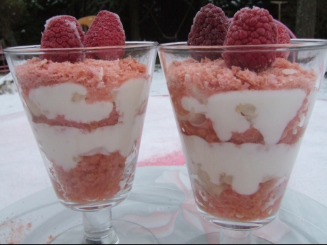
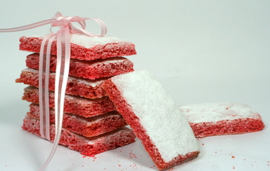

La création du Biscuit Rose de Reims remonte aux années 1960. Durant ces années, les boulangers champenois ont eu l’idée d’utiliser la chaleur de leur four après le défournage ; pour cela ils ont créé une pâte spéciale qui, après avoir subi une première cuisson, était laissée dans le four à pain chaud où il finissait des sécher. D’où le mot « bis-cuit », ce qui veut dire « cuit deux fois ». Il est important de préciser que la recette est inchangée depuis les années 1960, de plus, la maison Fossier, fondée en 1756 et fournisseur de Louis XVI, est la dernière biscuiterie à fabriquer ce fameux biscuit rose, elle est aujourd’hui La biscuiterie référence de la ville de Reims.
À l'origine, le biscuit était blanc. Son teint rose est dû au carmin qui est un colorant rouge naturel ajouté à la recette. Initialement blanc, le biscuit s’est paré de rose afin d’estomper les fines particules noires extraites de la gousse de vanille qui tachetaient sa robe.
Sa tenue quand il est humidifié est sans doute due à l’insolubilité du blanc d’œuf contenu dans sa recette et dans la seconde cuisson douce qu’il subit en étuve. Il est coutume de tremper le biscuit dans du champagne ou du vin rouge des coteaux champenois (tel le Bouzy rouge) pour le ramollir.
Le biscuit se mange aussi bien seul qu’accompagné, en ingrédient, ou en décoration de charlottes et autres gâteaux. Outre sa couleur rose, il est caractérisé par une texture craquante et fondante. Son poids traditionnel est de 100 g la douzaine.
La Maison Fossier vous accueille tous les jours sur réservation, du lundi au vendredi*, de 9h à 12h (le mercredi pour les particuliers sur rendez-vous). Voir ci-dessous les informations pratiques.
Au cours de la visite, nous vous faisons découvrir une facette de l’histoire gourmande de la ville des Sacres et vous offrons une visite passionnante au cœur de la gourmandise...
D’abord, c’est la fabuleuse histoire des Biscuits Fossier, qui débuta en 1756 au temps des rois, qui vous est contée, grâce à un film sur grand écran. Pour le plus grand plaisir des papilles, vous pourrez ensuite apprécier les délicieuses créations de la Maison, au cours d’une dégustation.
Puis une visite guidée au travers d’un parcours gourmand vous dévoile les secrets de fabrication respectueux de la tradition biscuitière. Pour des raisons d’hygiène et de sécurité, la visite des ateliers s’effectue par une galerie vitrée située à l’étage.
Chacun peut ensuite retrouver la gamme des biscuits Fossier dans le magasin d’usine qui jouxte la biscuiterie, ainsi qu’un large choix de compositions gourmandes.
Informations pratiques :
Visites jusque 50 personnes.
du lundi au vendredi* : de 9h à 12h.
Pour les particuliers, visite le mercredi*, sur rendez-vous.
Durée de la visite : environ 1h.
.
Tarif : 3.50€ par personne.
Informations :
Site Maison Fossier
Ingrédients nécessaires :
Pour environ 32 biscuits : 2 œufs - 100g de sucre - 1 sachet de sucre vanillé (voir la fiche Comment faire du sucre vanillé maison) - 90g de farine - 45g de maïzena - 1cc de levure chimique - colorant rouge - sucre glace.
-
- Etape 1:
- Séparer les jaunes des blancs puis mettre dans un saladier les sucres et les jaunes d’œufs et battre pendant 5 minutes jusqu'au blanchiment.
-
- Etape 2 :
- Ajouter un blanc d’œuf et battre pendant 2 minutes puis incorporer le deuxième blanc d’œuf et battre de nouveau 2min. Ensuite ajouter un peu de colorant rouge (liquide ou en poudre, à vue).
-
- Etape 3 :
- Tamiser la farine, la maïzena et la levure sur la préparation précédente et mélanger délicatement le tout à l’aide d’une spatule pour obtenir une préparation lisse et homogène.
-
- Etape 4:
- Remplir une poche à douille de la préparation et dresser les biscuits dans un moule à financier ou sur une plaque recouverte de papier de cuisson. Saupoudrer de sucre glace et mettre au four pendant 12min à 180°C. Laisser refroidir les biscuits avant de démouler. Les biscuits se conservent très bien quelques jours dans une boîte hermétique.
 